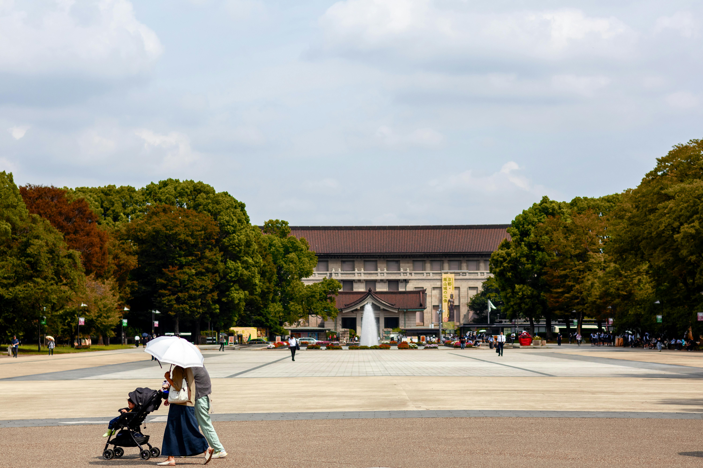

<!DOCTYPE html>
<html lang="en">
<head>
    <meta charset="UTF-8">
    <meta name="viewport" content="width=device-width, initial-scale=1.0">
    <title>Document</title>
</head>
<body>
    
</body>
</html>
<picture>
    <li>日本東京</li>
    
    <li>地點:東京都江東區大島8-38-32</li>
    
    <li>地點:2 Chome-3-1 Asakusa, Taito City,Tokyo 111-0032日本</li>
    <li>交通:東京 metro 銀座線「淺草站」1 號出口步行約 5 分鐘</li>
    <li>歷史:淺草寺位於日本東京都台東區淺草二丁目，是東京都內歷史最悠久的寺院。山號為金龍山</li>
    
    <li>地點: 日本東京都台東區上野恩賜公園
    <li>交通:東日本旅客鐵道:京成本線 至京成上野站</li>   
    <li>歷史:創立於1872年，是日本最早的博物館。該博物館位於日本國東京都台東區上野恩賜公園內，共有本館、表慶館、東洋館、平成館、法隆寺寶物館5展覽及資料館組成</li>
</picture>
</body>
</html>